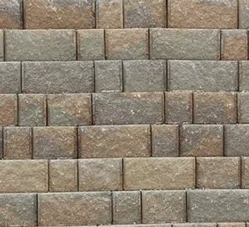
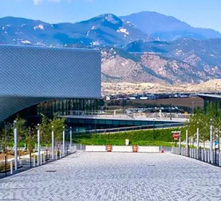
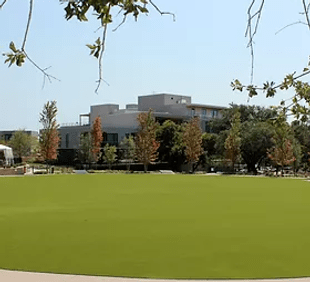
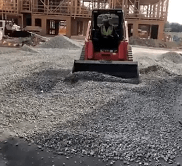

| НАШІ ПОСЛУГИ | |||
| Компанія Stonemasons є відомим і висококваліфікованим субпідрядником, який спеціалізується на великомасштабних технічних підпірних стінах і монтажі бруківки. Крім того, Stonemasons виконує безліч інших будівельних послуг, таких як; бетон на майданчику, архітектурні ландшафти, зовнішній об’ємний камінь, кам’яна бруківка, габіонні конструкції та застосування синтетичного газону. | |||
 |
Підпірні стінки cегментні блоки природний камінь MSE/Панель великий блок Geo-Fabric-Face ставки затримання тимчасове кріплення |
||
 |
З’єднана система асфальтоукладальників глина бетон граніт камінь |
||
 |
Cинтетичний газон велика площа спортивна використання на даху для подій спортивне поле рельєфні зони домашніх тварин |
||
 |
Водовідведення площі водостоків дренажна плитка французькі стоки |
||